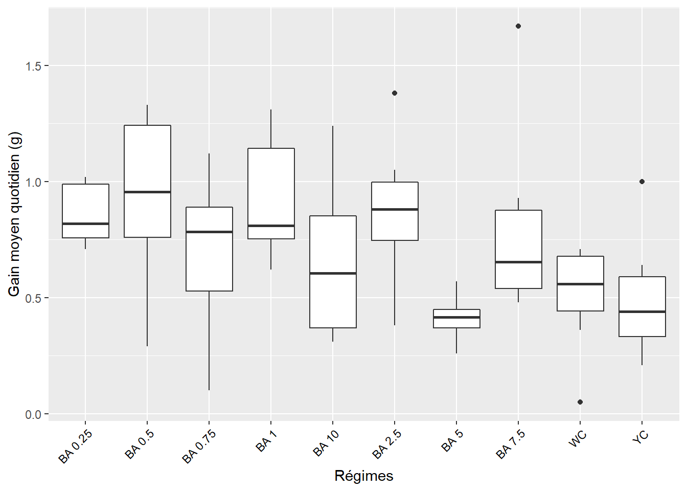

Exploration de données, nutrition de cailles
2021-07-23
Chapitre 1 Gain moyen quotidien
1.1 Les librairies
1.2 Les données
##
## -- Column specification --------------------------------------------------------
## cols(
## matiere = col_character(),
## regime = col_character(),
## masse_debut_croissance = col_double(),
## masse_fin_croissance = col_double(),
## gain_de_masse = col_double(),
## duree_j = col_double(),
## gain_moyen = col_double(),
## gmq = col_double()
## )1.3 Visualisation, boxplots
ggplot(data = dgmq, aes(x = regime, y = gmq)) +
geom_boxplot() +
#theme_classic() +
xlab("Régimes") + ylab("Gain moyen quotidien") +
theme(axis.text.x = element_text(angle = 45, color = "black", vjust = 1, hjust = 1))
1.4 Vérification des conditions de l’ANOVA
1.4.1 Normalité
Test de significativité comparant la distribution de l’échantillon à une distribution normale afin de déterminer si les données montrent ou non un écart important par rapport à la distribution normale.
Il existe plusieurs méthodes pour évaluer la normalité, notamment le test de normalité de Kolmogorov-Smirnov (K-S) et le test de Shapiro-Wilk.
- Ho. la distribution de l’échantillon est normale (ou n’est pas différente d’une distribution normale).
Si p-value > 0,05 alors la distribution des données n’est pas significativement différente de la distribution normale. On accepte Ho.
## # A tibble: 1 x 3
## variable statistic p
## <chr> <dbl> <dbl>
## 1 gmq 0.980 0.124p-value > 0.05, alors distribution normale
1.4.2 Homogénéité des variances, test de Levene
Pour ces tests :
Ho. Toutes les variances des populations (traitements) sont égales.H1ouHa. Au moins deux d’entre elles diffèrent.
Par conséquent, des valeurs p inférieures à 0,05 suggèrent que les variances sont significativement différentes et donc que l’hypothèse d’homogénéité des variances n’est pas respectée.
## # A tibble: 1 x 4
## df1 df2 statistic p
## <int> <int> <dbl> <dbl>
## 1 9 90 2.22 0.0276p-value < 0.05 => Variances non homogènes => Alternative non paramétrique : Test de Kruskal-Wallis recommandé lorsque les hypothèses du test ANOVA à un facteur ne sont pas respectées.
1.4.3 Alternative non paramétrique, test de Kruskal-Wallis
## # A tibble: 1 x 6
## .y. n statistic df p method
## * <chr> <int> <dbl> <int> <dbl> <chr>
## 1 gmq 100 35.6 9 0.0000463 Kruskal-Wallisp-value < 0.05 => Différence significative entre les effets d’au moins 2 régimes.
Un test de Kruskal-Wallis significatif est généralement suivi d’un test de Dunn pour identifier les groupes différents. Le test de Dunn tient compte du classement utilisé par le test de Kruskal-Wallis. Il fait aussi des ajustements pour les exaequos.
1.4.4 Comparaisons par paires, test de Dunn
Pour identifier les groupes différents.
dgmq %>%
dunn_test(gmq ~ regime, p.adjust.method = "bonferroni") %>%
select(group1, group2, p, p.adj, p.adj.signif) %>%
filter(p.adj.signif != "ns")## # A tibble: 4 x 5
## group1 group2 p p.adj p.adj.signif
## <chr> <chr> <dbl> <dbl> <chr>
## 1 BA 0.25 BA 5 0.000239 0.0107 *
## 2 BA 0.5 BA 5 0.000401 0.0181 *
## 3 BA 1 BA 5 0.000117 0.00528 **
## 4 BA 2.5 BA 5 0.000294 0.0132 *Sont les paires de régimes dont les effets sur le GMQ sont significativement différents.
Calcul des moyennes ci-dessous, pour le classement manuel (identifier les groupes). Le graphique automatique un peu complexe !
dgmq %>%
select(regime, gmq) %>%
group_by(regime) %>%
summarise_all(list(gmq_moyen = mean, sd = sd))## # A tibble: 10 x 3
## regime gmq_moyen sd
## <fct> <dbl> <dbl>
## 1 BA 0.25 0.857 0.126
## 2 BA 0.5 0.912 0.387
## 3 BA 0.75 0.711 0.336
## 4 BA 1 0.925 0.243
## 5 BA 10 0.675 0.353
## 6 BA 2.5 0.871 0.268
## 7 BA 5 0.413 0.0806
## 8 BA 7.5 0.77 0.356
## 9 WC 0.517 0.202
## 10 YC 0.485 0.227